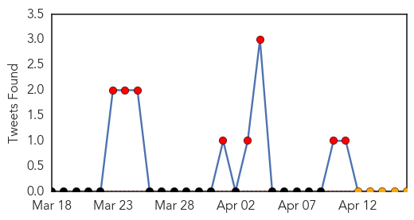
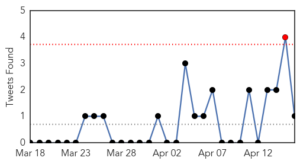
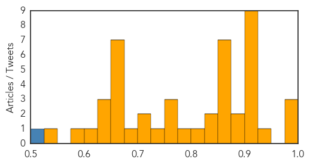

Ebola
30-Day Web Trend
27 alerts, 0 warnings

30-Day Twitter Trend
17 alerts, 0 warnings

Article Locations

Article Confidences

Top Articles:
- 1.000
- Guinea says few new Ebola cases, outbreak nearly under control
- 1.000
- Ebola Outbreak 'Under Control,' No New Cases
- 1.000
- As African Ebola Outbreak Spreads, Hopes for Vaccine Remain Years Away
- 1.000
- Ebola under control in Guinea After 130 people killed
- 0.999
- Taking preventive action to stop the Ebola outbreak in West Africa
- 0.999
- More medical assistance from EU to West Africa
- 0.999
- Liberia's first Ebola patient in over a month dies
- 0.999
- Ebola Outbreak Almost Under Control
- 0.999
- EU increases medical assistance to West Africa
- 0.999
- Ebola virus in Africa outbreak is a new strain
- 0.998
- We're aliens in Ebola's world
- 0.998
- Ebola Virus in Africa Outbreak is a New Strain
- 0.998
- Ebola virus in Africa outbreak is a new strain
- 0.997
- UNICEF, WHO and Red Cross Joined Hands to Spread Awareness of Ebola in West African Countries
- 0.996
- Ebola Could Spread Out of Africa, Doctors Admit
- 0.995
- West Africa Ebola Is Novel Strain
- 0.993
- Ebola Claims More Victims in West Africa
- 0.987
- GIMPA to tackle Ebola fears in public education seminar
- 0.977
- Surviving Ebola, Overcoming Stigma
- 0.968
- New Ebola Strain Causing West Africa Outbreak
- 0.946
- Gambia bans flights from Ebola-hit nations. Health. Tengrinews.kz
- 0.942
- iafrica.com Gambia blocks 'ebola flights'
- 0.927
- News in Brief: Week of April 14-18
Top Tweets:
- 0.760
- http://t.co/otsSYIZI4W. @NEJM Emergence of a new Zaire Ebola virus clade in Guinea.
Unknown
30-Day Web Trend
0 alerts, 0 warnings

30-Day Twitter Trend
2 alerts, 0 warnings

Article Locations

Article Confidences
Top Articles:
- 0.999
- MERS Virus Is On The Rise, Death Toll Increasing In Saudi Arabia
- 0.998
- Concern over rising MERS
- 0.993
- UAE resident is quarantined in Manila with MERS
- 0.948
- N. Korea says bird flu spreading following additional outbreak
- 0.918
- Deadly pork virus continues to confound
- 0.917
- Chicago Tribune
- 0.917
- Chicago Tribune
- 0.917
- Chicago Tribune
- 0.917
- Chicago Tribune
- 0.917
- Chicago Tribune
- 0.917
- Chicago Tribune
- 0.917
- Chicago Tribune
- 0.902
- Progress in Understanding Immune Response in Severe Schistosomiasis
- 0.882
- One in 16 patients in NHS hospitals picks up infection, warns watchdog
- 0.878
- Philippines quarantines man over MERS fears
- 0.866
- Schoolchild on sinking S.Korean ferry sends text message to father
- 0.866
- Ex-finmin Vaz to face Nabiam in Guinea-Bissau election run off
- 0.866
- More than 100 remain unaccounted for after S.Korea ferry sinks
- 0.866
- S.Korea passenger ship with 350 on board sends distress signal
- 0.866
- Bill signed easing snap inspections of Arizona abortion clinics
- 0.861
- DOH probes rise of diarrheal cases in some Romblon barangays; 2 deaths reported
- 0.858
- Tuberculosis tests planned at Hephzibah High
- 0.849
- Immune System Research May Help Doctors Predict Who Gets Long-Term Complications From Lyme Disease
- 0.836
- DOH monitors rising number of diarrhea cases in Romblon
- 0.823
- FAO warns of debilitating banana disease
- 0.793
- Kenya : Be warned: Interaction with cats could land you in hospital
- 0.767
- Intensify education on buruli ulcer
- 0.765
- Nicaragua: Monitoring Emergencies - Nicaragua 4/15/2014
- 0.756
- Monitoring Emergencies - Chile 4/15/2014 - Chile
- 0.725
- Kenya : Fears of worldwide banana shortage as killer fungus spreads
- 0.722
- Feral hogs eyed in PEDv spread
- 0.721
- Hospital infection rates must come down, says watchdog
- 0.694
- Flying fox found with lyssavirus
- 0.653
- Scandal-hit French doctor Jacques Servier dies at 92
- 0.653
- Belgian head of wildlife reserve shot in DR Congo
- 0.653
- US rolls out red carpet for French critic of capitalism
- 0.653
- Kiev powerless as pro-Russia activists seize armoured vehicles
- 0.653
- Paris laboratory loses deadly SARS virus samples
- 0.653
- France's new PM targets welfare in drive to cut spending
- 0.653
- Algeria heads to the polls: ‘This election has nothing to do with us’
- 0.643
- Indonesia health minister visits Timika to monitor leprosy
- 0.636
- Pig Virus Detected on Michigan Farms
- 0.629
- Progress in Understanding Immune Response in Severe Schistosomiasis
- 0.613
- Millions of children to be vaccinated against polio in Chad - Chad
- 0.579
- Sunday Morning News: Hunter Course Free At Sheriff's Range
- 0.528
- Sexually transmitted diseases rose 10% in Minnesota last year
Top Tweets:
- 0.518
- “@sumishanaidu: "I would advise Malaysians to take this (MERS death) very seriously" - Malaysian Health Minister Dr S Subramaniam”
- 0.516
- Un d√≠a vivido, soy bendecida üòç ahora quiero dormir ... Ma√±ana me espera un d√≠a lleno de retos...‚ú®üí§
- 0.503
- RT: KSA informs about the Jeddah MERS outbreak. Say it's up to 37 cases; 21 are health workers http://t.co/RCB7ObAHn…